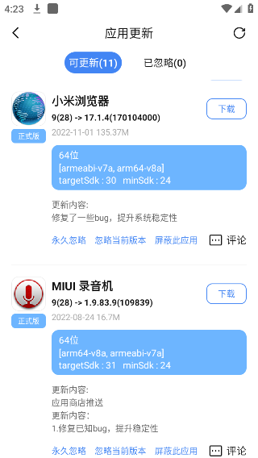
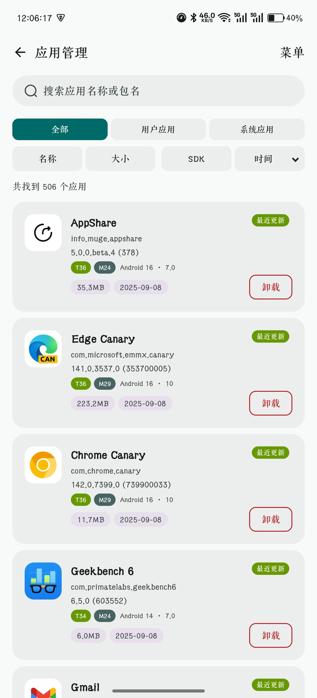

AppShare 里藏着你不知道的五个黑科技
大多数人用 AppShare 只知道搜应用下载，但它藏着版本忽略三档粒度、包名签名一键查、任务中心隐形福利、多版本对比切换这些深功能，翻到底层才是真高手。
你以为 AppShare官网 就是个"搜应用、下安装包"的工具？装了快一年我才发现，它真正好用的那些功能，全藏在二级菜单和角落按钮里——官方不宣传，界面上也没引导，不刻意折腾根本碰不到。今天把我挖出来的几个冷门但真能省事儿的东西抖出来，看看你用了这么久能中几个。
版本忽略不止一档——三档粒度随便切
第一个让我拍大腿的就是这个。以前我只知道"忽略当前版本"，以为 AppShare 的更新提醒只有一种屏蔽方式。直到某次在更新列表里长按了一下应用条目，才发现底部藏着三个按钮。
在可更新列表里，每条应用条目展开后，底部从左到右依次是「永久忽略」「忽略当前版本」「屏蔽此应用」。这三个看起来差不多，实际效果差十万八千里：
- 忽略当前版本：只屏蔽这一个版本号，比如 8.0.62 不想更，等 8.0.63 出来还是会正常提醒你
- 永久忽略：这个应用以后所有版本的更新提醒都不吱声了，适合那种"装完就不想动"的工具类应用
- 屏蔽此应用：连带着更新列表里的那条记录都给你删掉，眼不见心不烦
更绝的是恢复入口藏在哪儿——进「设置」→「更新管理」→「忽略列表」，这里能看到你所有屏蔽过的应用，逐条取消或者一键清空都行。我之前手滑屏蔽了一个常用应用，找了半天才找到这个页面，后来去翻 AppShare文档 才理清楚三档粒度的完整区别。

什么人用得上？那些装了十几个应用但只想更其中几个的人，或者某应用新版本砍了你依赖的功能、想钉死在旧版不动的——用"忽略当前版本"最稳，下次有新更新还能收到。而对那种已经弃坑的应用，直接"屏蔽此应用"，列表干净多了。
查包名、看签名——应用管理页是个被忽略的查档神器
AppShare 的"我的"页面里有个「应用管理」，进去就是你手机上装的所有应用。大多数人可能扫一眼就关了，但如果你要折腾开发、卡签名验权、或者卸载流氓预装，这页能顶上半个 ADB。
每个应用条目默认展示的信息量比你想象中多得多：除了图标、名称、版本号，还有包名（精确到 info.muge.appshare 这种格式）、SDK 标签（T36 M24 分别是 target 和 min SDK）、架构标签（arm64 / armv7a）、体积，甚至还有一个绿色的「最近更新」标记。
右上角菜单能切排序维度：按名称、按大小、按 SDK 版本、按最近更新时间——手机用久了想清理空间，切到按大小排序，一屏全是你装了但忘了删的大应用。
顶部搜索框支持按应用名称或包名模糊搜。上次我要找一个系统预装包的精确包名，在这里敲了关键字两秒就定位到了，省得我翻半天设置或者跑 ADB 命令。

还有三个 tab 切换：「全部」「用户应用」「系统应用」。要卸载预装流氓？切到系统应用 tab，先在这里确认包名，再决定要不要动手——比瞎删稳多了。
任务中心——你每天都在完成任务但不知道
「我的」页面常用功能板块里有个「任务中心」，点进去能看到一排任务：每日浏览 N 个应用详情、完成 N 次搜索、下载 N 次资源……完成之后回来手动领积分，或者系统自动发。
关键是——这些任务不需要你特意做。你正常打开 AppShare 浏览分类、搜应用、点下载，行为本身就在打卡。我连续看了三天任务中心，发现每天躺着就能拿三四个任务的积分，根本没花额外时间。
进阶任务奖励更厚：首次上传应用、邀请好友注册，完成一次顶日常十天。邀请好友双方都有积分，适合那种有装机量需求的开发者互相拉一波。
积分能换什么？任务中心往下滑有个积分商城，兑换权益和道具都在里面。具体兑换品会随平台活动更新，但就"日常顺手做任务换积分"这一点来说，是真福利，不是噱头。
多版本 tab——一个应用能切正式版、测试版、谷歌版
点开任意应用的详情页，你会发现顶部有几个版本 tab 在跳。大多数人只会盯着"正式版"看，但其实 AppShare 给一些热门应用准备了三种版本通道：
- 正式版：稳定推荐版本，绝大多数人用这个
- 测试版：beta 通道版本，尝鲜党和开发者关注
- 谷歌版：Google Play 发行的同包名版本，国内版和国际版对照着看就靠这个
每个 tab 下面都是该通道下的完整版本归档，按时间从新到旧排列。我用它来对比国内版和谷歌版的差异，有时候谷歌版更新但国内版卡着不上，就能直接下载测试版体验。
本地 vs 云端版本对比——下之前先看清差在哪
详情页中间有个"版本对比区"，左边是你手机上装的本地版本，右边是 AppShare 归档的云端最新版本，字段逐个对齐：版本号、Build 号、架构、构建时间。
这个设计看起来普通但真的实用——一眼就能知道"要不要更"。比如你本地是 8.0.62 Build 2900，云端是 8.0.63 Build 280031，版本号和 Build 都跳了一档，肯定值得更；但如果版本号变了 Build 没变，可能就是个马甲包，就没必要折腾了。
下面还有更新日志——AppShare 会尽量抓取官方 changelog，或者展示社区标注的版本变化说明。下载之前先看一眼，能避开那种"更新全是广告"的坑。
别踩的一个坑——忽略列表不清会越积越多
说点不好的：忽略用起来爽，但屏蔽的应用多了之后，忽略列表会越来越长，而且 AppShare 不会主动提醒你清理。我上周看了一下自己的忽略列表，堆了快二十个应用，有些都忘了当初为什么屏蔽。
建议养成习惯：每周进一次「设置」→「更新管理」→「忽略列表」，扫一眼，把那些已经想重新更的应用取消忽略。一键清空虽快，但建议先看看再动，毕竟一清空所有屏蔽都会撤销，更新列表会突然涌入一堆旧应用提醒。
AppShare 这套功能设计，好的地方是实用不花哨，藏得深是为了不干扰主流用户——你搜个应用下载，哪需要知道包名和 Build 号对吧。但如果你想把它用透，这几个隐藏功能值得翻一翻：版本三档忽略让更新列表清爽、应用管理页的元信息比 ADB 还方便、任务中心积分顺手拿、多版本 tab 让国内/国际版切换无压力。把这些都摸清楚，AppShare 才算真正用出了它的价值。顺手说一句，AppShare 相关的资料我在 GitHub、Gitee 和 GitCode 三个仓库都留了一份，哪个访问方便直接看哪个就行。